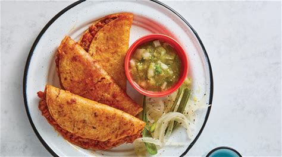
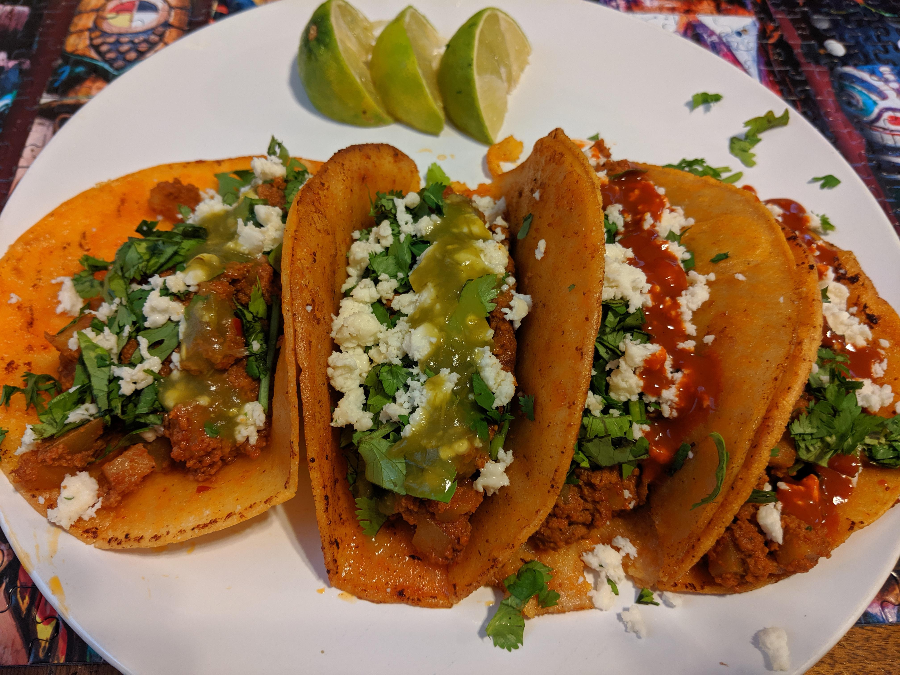
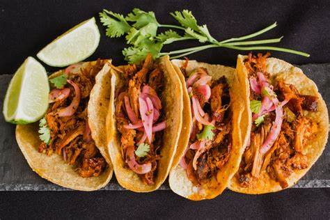
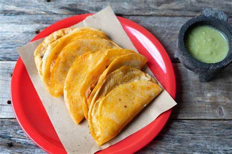

Inicio
Nosotros
Nuestros productos
Galería
Contacto
Tacos de canasta: La abuelita
Taco de Canasta de Chicharrón Prensado
Descripción: Deliciosos tacos rellenos de chicharrón prensado, una preparación de cerdo crujiente y sazonada.
Precio: $15 por taco
Ingredientes: Chicharrón prensado, tortilla de maíz, salsa verde, cebolla, cilantro.

Taco de Canasta de Papa con Chorizo
Descripción: Tacos rellenos de papa y chorizo, una combinación sabrosa y reconfortante.
Precio: $12 por taco
Ingredientes: Papa, chorizo, tortilla de maíz, salsa roja, cebolla, cilantro.

Taco de Canasta de Frijoles Refritos
Descripción: Tacos rellenos de frijoles refritos, una opción vegetariana deliciosa y saludable.
Precio: $10 por taco
Ingredientes: Frijoles refritos, tortilla de maíz, salsa verde, cebolla, cilantro.
Taco de Canasta de Cochinita Pibil
Descripción: Tacos rellenos de cochinita pibil, un platillo típico de la península de Yucatán con cerdo marinado en achiote.
Precio: $18 por taco
Ingredientes: Cochinita pibil, tortilla de maíz, cebolla encurtida, salsa de habanero, cilantro.

Taco de Canasta de Rajas con Crema
Descripción: Tacos rellenos de rajas de chile poblano con crema, una opción cremosa y ligeramente picante.
Precio: $14 por taco
Ingredientes: Rajas de chile poblano, crema, tortilla de maíz, cebolla, cilantro.
